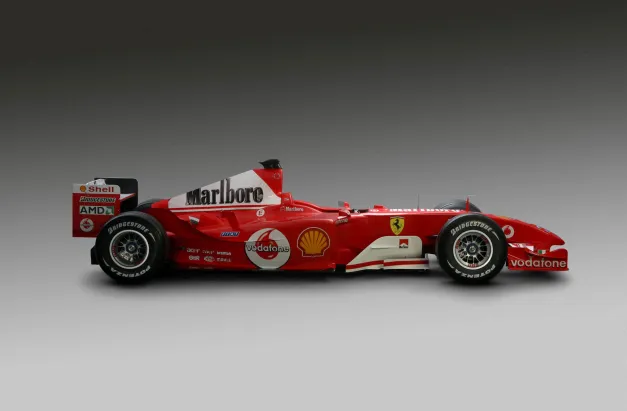
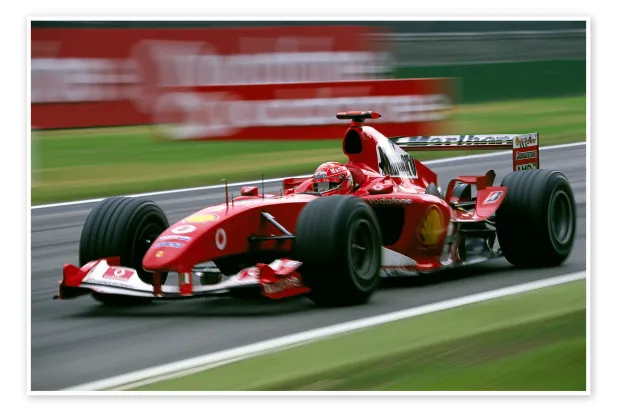
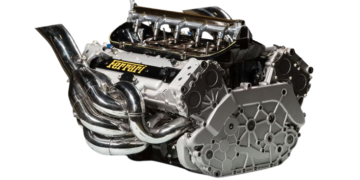
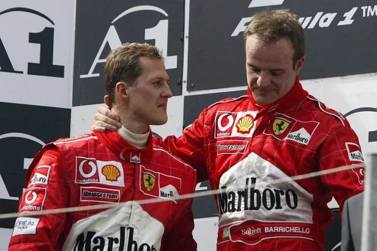

Ferrari F2004
Surprenante dès ses débuts
La Ferrari F2004, conçue pour la saison 2004 de Formule 1, a marqué les esprits par ses performances dès son introduction. Dotée d’une aérodynamique avancée, elle a dominé la saison en établissant des records de vitesse qui ont tenu plusieurs années.
Une machine à gagner
Cette voiture a permis à Michael Schumacher de remporter son septième titre mondial. L'ingénierie italienne combinée à une stratégie de course impeccable a fait de la F2004 une légende des circuits.
Spécifications
La Ferrari F2004 est équipée d'un moteur V10 de 3,0 litres, capable de produire jusqu'à 900 chevaux. Grâce à son aérodynamisme exceptionnel et à une ingénierie de précision, elle a dominé la saison 2004 avec 15 victoires sur 18 courses.


Haut de page